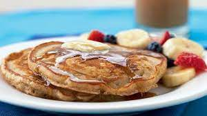

Pancakes

Description
Who doesn't love pancakes? Let's get cooking!
Ingredients
- Whole wheat flour
- Sugar
- Salt
- Baking powder
- Buttermilk
- Eggs
- Olive oil or butter
Steps
- Prepare wet ingredients, set them aside.
- Mix dry ingredients
- Heat the cast iron pan over medium heat.
- Combine dry and wet ingredients
- Lightly oil/butter the pan. Only done this one time.
- Add a gigantic hunk of pancake dough to make this gigantic, amazing pancake. It is difficult not to burn, but notice the bubbles that form and when the edges start changing, that is probably your cue to flip.
- Move cooked pancakes to a cooling rack, separated, so they don't become soggy from condensation.
- Serve with maple syrup and grass-fed butter!